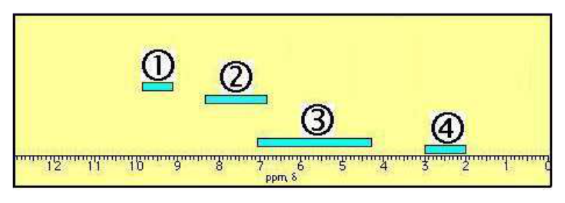
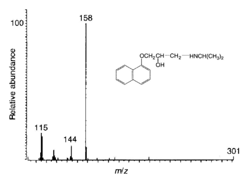
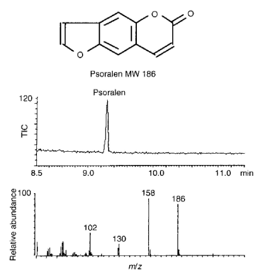

開卷有益 ／
藥師 ／ 藥物分析與生藥學 ／ 108 年第 2 次108 年第 2 次藥師藥物分析與生藥學試題與答案
這一頁是民國 108 年第 2 次藥師藥物分析與生藥學的整份歷屆試題，共 80 題，題目與標準答案出自考選部「國家考試試題及測驗式試題答案」開放資料，其中 80 題附有詳解。以下逐題列出題幹、選項與答案；要計時作答或記錄成績，請用線上練習。
考選部原始場次代碼：108100
線上作答這一科 →
全部 80 題
第 1 題
下列何者不適用酸滴定分析法？
（A） 水楊酸鈉錠（B） 酒石酸鉀鈉（C） 鎂乳（D） 水合三氯乙醛答案：（D）
詳解與考點 正解：酸滴定分析法的對象須能以固定當量和酸發生明確的酸鹼反應。（D）水合三氯乙醛為中性的共價化合物，不能作為酸滴定的鹼性受質；本題判準是待測物有沒有可定量的鹼性當量，直接滴定、灼燒後滴定或剩餘滴定都算適用，故選 D。
A：水楊酸鈉是弱酸的鹽，其 salicylate 可接受質子並以酸滴定，符合酸滴定所需的化學計量反應。
B：酒石酸鉀鈉中的 tartrate 具有可被質子化的鹼性形式；此類有機酸的鹼金屬鹽依慣例先灼燒成碳酸鹽，再以標準酸滴定，可依酸鹼當量定量，故仍屬可適用的對象。
C：鎂乳的主要鹼性成分為 magnesium hydroxide，可與酸定量中和；看似為難溶懸液，實務上加入過量標準酸使其完全中和後，再以標準鹼回滴（剩餘滴定），分辨關鍵是其仍能提供可中和的鹼性當量。
本題考點：酸滴定（acidimetry）——先確認待測物是否能接受質子並形成固定當量關係，再判斷可否直接滴定；直接滴定適用性——中性共價化合物若沒有可定量的酸鹼反應，不能只因可溶或含水合基團就判為酸滴定對象。
第 2 題
檸檬酸（citric acid）的3個pKa值分別為3.06、4.74及5.40，其緩衝之pH範圍下列何者最適當？
（A） 2.06～4.06（B） 3.06～5.40（C） 2.06～6.40（D） 4.40～6.40答案：（C）
詳解與考點 正解：檸檬酸為三質子酸，每一個 pKa 附近約正負 1 個 pH 單位都可形成有效緩衝區。最低端為 3.06 - 1.00 = 2.06，最高端為 5.40 + 1.00 = 6.40；三段緩衝區合併後的最適範圍為（C）2.06-6.40，故選 C。
A：2.06-4.06 只涵蓋第一個 pKa 周圍的範圍，遺漏第二與第三個解離步驟可提供的緩衝能力。
B：3.06-5.40 僅列出最外兩個 pKa 的位置，沒有納入兩端各約 1 個 pH 單位的有效緩衝區。
D：4.40-6.40 偏向後兩段解離，卻排除了 pKa = 3.06 附近的酸性緩衝區。
本題考點：緩衝範圍（buffer range）——單一酸鹼對通常以 pKa ± 1 判斷有效緩衝區；多質子酸（polyprotic acid）——有多個 pKa 時，要把各解離步驟的有效區間聯集，而非只看其中一個 pKa；Henderson-Hasselbalch 關係——酸與共軛鹼濃度比落在約 0.1-10 時，才具有實用的緩衝能力。
第 3 題
有關折射率測定法之敘述，下列何者錯誤？
（A） 各藥品折射率測定值，一般係以鈉光之D線為光源（B） 一般以蒸餾水校正，蒸餾水之折射率在25℃時為1.00（C） 折射率測定，可作為鑑別或純度檢查用（D） 測量時應將溫度精確調整，測定至少3次，求其平均值答案：（B）
詳解與考點 正解：判準在於蒸餾水在25℃時的折射率數值——蒸餾水的折射率並非1.00,而是略高於1.33左右的數值，「1.00」明顯低於水的實際折射率，此敘述數值有誤，故選B。
A：折射率測定慣以鈉光D線（波長589 nm附近）作為標準光源，這是折射率測定法的通用規範，此敘述正確。
C：折射率是物質的特徵性物理常數，可用於鑑別物質種類，也可透過與已知純度標準品比對折射率差異來檢查純度，此敘述正確。
D：折射率對溫度變化敏感，測定時須精確控制溫度，並重複測定取平均值以提高精確度，此為折射率測定法的操作要求，此敘述正確。
本題考點：折射率測定法（refractometry）——以鈉光D線為標準光源，對溫度敏感須精確控溫並重複測定取平均；水的折射率數值——常溫下約1.33左右，遠高於選項所述的1.00,此為本題判斷的關鍵數值。
第 4 題
螢光光度測定法中，有激發光（excitation）與放射光（emission）波長，下列何者為最常出現之波長差異？
（A） 10～45 nm（B） 50～150 nm（C） 160～200 nm（D） 210～300 nm答案：（B）
詳解與考點 正解：螢光分子吸收 excitation 光後，通常先經振動鬆弛再發出能量較低、波長較長的 emission 光，兩者的 Stokes shift 常落在 50-150 nm。因此最常出現的波長差異為（B）50-150 nm，故選 B。
A：10-45 nm 的差距過小，可能出現在少數條件下，但不是螢光光度測定最常見的 excitation 與 emission 分離範圍。
C：160-200 nm 已大於通常的 Stokes shift 範圍，不能作為本題所問的最常見差異。
D：210-300 nm 的間隔更大，與一般螢光分子經振動鬆弛後的常見波長位移不符。
本題考點：Stokes shift——判斷螢光波長時，emission 通常比 excitation 長，兩者不可視為同一波長；螢光光度測定（fluorometry）——選擇偵測波長時，要讓 emission 與 excitation 有足夠分離以降低散射光干擾。
第 5 題
已知氫的原子量為1.008，碳的原子量為12.011，溴的原子量79.904。在CH3Br的低解析質譜中，下列何者最可 能為其分子離子的實驗值？
（A） 95.2（B） 94.9（C） 94.0（D） 93.0答案：（C）
詳解與考點 正解：低解析質譜讀取的是含特定同位素之分子離子的名義質量，而非用平均原子量得到的平均分子量。對含 ^79Br 的 CH3Br 分子離子，C = 12、3 個 H = 3 × 1 = 3、^79Br = 79，故 m/z = 12 + 3 + 79 = 94，可觀察的分子離子訊號為（C）94.0，故選 C。
A：95.2 不是 CH3^79Br 在低解析質譜中應出現的整數名義質量；低解析的判讀重點在同位素分子離子的整數 m/z。
B：94.9 接近以題給平均原子量計算的 12.011 + 3 × 1.008 + 79.904 = 94.939，但這是平均分子量，不是單一同位素分子離子的低解析實驗峰值。
D：93.0 比 CH3^79Br 的名義質量少 1，無法由該完整分子離子的元素組成得到。
本題考點：名義質量（nominal mass）——低解析質譜先以各同位素的整數質量相加，對應實際 m/z 峰位；平均原子量與精確質量（average atomic weight vs exact mass）——前者適合平均分子量計算，不能直接代替同位素質譜峰；溴同位素圖譜（bromine isotope pattern）——含 Br 的分子會有相隔 2 質量單位的同位素峰，判讀時要先鎖定其中一個分子離子峰。
第 6 題
下列何種鍵結在紅外光光譜中的吸收強度最大？
（A） C–C（B） C–F（C） C–H（D） C–O答案：（B）
詳解與考點 正解：紅外光吸收強度主要取決於振動時偶極矩改變的大小。C-F 鍵因兩原子的電負度差大，伸縮振動造成的偶極矩變化明顯，四個選項中吸收強度最大，故選 B。
A：C-C 為同種原子間的非極性鍵，伸縮時偶極矩改變很小，紅外光吸收很弱。
C：C-H 雖可見紅外吸收，但其振動造成的偶極矩改變通常小於高度極性的 C-F 鍵。
D：C-O 為極性鍵且有明顯吸收，但 C-F 的鍵極性更大；分辨關鍵是振動偶極矩改變，不是只比較是否含氧。
本題考點：紅外光譜吸收強度（IR absorption intensity）——比較官能基時先看振動過程的偶極矩改變，改變越大峰通常越強；鍵極性（bond polarity）——電負度差大的異核鍵較容易產生強的紅外吸收；非極性鍵——同核或近似非極性的鍵即使可振動，也常只有弱吸收。
第 7 題
進行atomic absorption spectrophotometry分析時，使用下列何種氣體組合可以使火焰溫度達到3,000℃？
（A） acetylene－compressed air（B） acetylene－nitrous oxide（C） natural gas－compressed air（D） nitrous oxide－compressed air答案：（B）
詳解與考點 正解：atomic absorption spectrophotometry 的火焰溫度由燃料與助燃氣組合決定。acetylene 與 nitrous oxide 的火焰溫度可達約 3,000℃，適合需要較高原子化溫度的元素分析，故選 B。
A：acetylene-compressed air 的火焰溫度低於 acetylene-nitrous oxide，不能達到題目所列的高溫條件。
C：natural gas-compressed air 為較低溫的燃燒組合，原子化能力不足以對應 3,000℃。
D：nitrous oxide 是助燃氣而非可單獨供應主要燃燒熱的燃料；與 compressed air 組合不構成題目所需的高溫燃料-助燃氣系統。
本題考點：火焰原子吸收光譜法（flame atomic absorption spectrophotometry）——需要較高原子化溫度時，先選高溫的燃料-助燃氣組合；acetylene-nitrous oxide flame——遇到約 3,000℃ 的火焰條件時，可直接與此組合配對；助燃氣與燃料——判別選項前先分清哪一種氣體提供燃燒、哪一種支援燃燒。
第 8 題
在氫核磁共振光譜中，下圖標示①至④的化學位移範圍，何者是一般苯環氫之訊號呈現的位置？

（A） ①（B） ②（C） ③（D） ④答案：（B）
詳解與考點 正解：圖上四個區間由左而右對應化學位移遞減，①落在約 9 至 10 ppm、②落在約 7 至 8 ppm、③涵蓋約 4 至 7 ppm 的寬區間、④落在約 2 至 3 ppm。一般苯環氫（aromatic proton）的訊號落在 6.5 至 8.5 ppm，與②的範圍相符，故選 B。
A：①落在 9 至 10 ppm，對應的是醛基氫（aldehyde proton，−CHO）去屏蔽最強的區域，不是苯環氫的位置。
C：③涵蓋約 4 至 7 ppm，這個寬區間對應烯氫（vinyl proton）與部分鄰接雜原子的次甲基氫，範圍比苯環氫更寬也更偏高磁場，不是苯環氫專屬的訊號位置。
D：④落在 2 至 3 ppm，對應的是接在羰基或苯環旁的脂肪族氫（如 benzylic 或 α-carbonyl氫），已明顯偏向高磁場，不是苯環氫本身的訊號。
本題考點：氫核磁共振化學位移的區段判讀（chemical shift regions）——去屏蔽程度由官能基決定，醛氫最低磁場、苯環氫次之、烯氫居中、脂肪族氫最高磁場；苯環氫的典型位移範圍（約 6.5 至 8.5 ppm）是判讀芳香族結構的常用基準。
第 9 題
以HPLC分析中性待測物，下列動相之條件何者對其滯留時間影響最小？
（A） 流速（B） pH值（C） 黏稠度（D） 組成答案：（B）
詳解與考點 正解：中性待測物在分析範圍內不會因 pH 改變而轉換為不同電離型態，因此（B）pH 值對其與靜相分配的影響最小。相較之下，流速、黏稠度與動相組成都會改變流動或分配條件，故選 B。
A：流速直接改變待測物通過管柱所需的時間，流速下降時滯留時間通常延長，影響不能忽略。
C：動相黏稠度會影響線速度、柱壓與傳質行為，因而可能改變實測的滯留表現。
D：動相組成改變溶劑強度與待測物在動、靜相間的分配，是調整 HPLC 滯留時間的主要方法之一。
本題考點：中性待測物的 HPLC 滯留（HPLC retention of neutral analytes）——先判斷分析物是否電離，只有可電離物才會對 pH 有顯著的保留改變；流速與滯留時間（flow rate and retention time）——其他條件固定時，流速是直接改變 tR 的操作變因；動相組成（mobile-phase composition）——調整有機溶劑比例會改變溶劑強度與分配平衡。
第 10 題
配製液相層析之動相時，乙酸緩衝液中加入乙腈時，會使其pH值產生下列何種變化？
（A） 增加（B） 減少（C） 不變（D） 隨乙腈加入之百分比增加而降低答案：（A）
詳解與考點 正解：乙腈加入乙酸緩衝液後，混合溶劑的介電性下降，使乙酸解離形成帶電物種較不利；在本題的水-乙腈動相條件下，氫離子活性降低，量得的表觀 pH 會增加。因此（A）增加為正確變化，故選 A。
B：pH 減少與乙腈加入後乙酸較不易解離的方向相反，不能作為此緩衝液的預期變化。
C：pH 並非只由緩衝液最初濃度決定；加入有機溶劑已改變酸鹼平衡與離子活性，故不會維持不變。
D：乙腈比例增加時，本題條件下的表觀 pH 是上升而非下降；分辨關鍵在混合溶劑對解離平衡的影響方向。
本題考點：混合溶劑酸鹼平衡（acid-base equilibrium in mixed solvents）——加入有機改質劑時，不可把水溶液的 pH 與 pKa 直接視為不變；介電常數與解離（dielectric constant and dissociation）——介電性降低通常不利帶電物種形成，判斷時先看酸的解離方向；表觀 pH（apparent pH）——HPLC 動相中的 pH 需連同溶劑組成解讀。
第 11 題
有關液相層析法的敘述，下列何者正確？
（A） 溫度不會影響滯留時間（B） 靜相為silica gel時，benzyl alcohol 比benzoic acid的滯留時間短（C） 逆相層析法的動相為低極性的有機溶劑（D） 動相的組成不影響滯留時間答案：（B）
詳解與考點 正解：靜相為 silica gel 時屬正相層析，極性較強或可與 silica 表面形成較強作用者滯留較久。benzoic acid 比（B）benzyl alcohol 更容易與極性 silica 表面作用，因此（B）所述的滯留時間較短，故選 B。
A：溫度會改變動相黏度及溶質在兩相間的分配平衡，因此會影響滯留時間，不能說完全不影響。
C：逆相層析使用非極性靜相與較極性的動相，常見動相為水與可混溶有機溶劑的混合物，不是低極性的有機溶劑。
D：動相組成會改變洗脫強度與分配係數，是控制滯留時間的重要條件，故此敘述錯誤。
本題考點：正相層析（normal-phase chromatography）——silica gel 為極性靜相時，先比較分析物與靜相的極性作用，作用較強者滯留較久；逆相層析（reversed-phase chromatography）——判斷模式時以非極性靜相、較極性動相為準；層析滯留因子（retention factor）——溫度與動相組成改變分配平衡時，滯留時間也會改變。
第 12 題
下列何者為逆相層析所用之C18管柱充填劑？
（A） octadecyl silane-bonded silica particles（B） octyl silane-bonded silica particles（C） phenyl silane-bonded silica particles（D） silica particles答案：（A）
詳解與考點 正解：逆相層析最常用的非極性固定相為 C18，也就是將十八烷基矽烷鍵結於 silica particles 表面。因此（A）octadecyl silane-bonded silica particles 即為 C18 管柱填充劑，故選 A。
B：octyl silane-bonded silica particles 為 C8 固定相，烷基鏈比 C18 短，疏水性與保留能力不同。
C：phenyl silane-bonded silica particles 是 phenyl 固定相，可提供芳香環相關的選擇性，但不是以 C18 命名的十八烷基固定相。
D：未鍵結的 silica particles 為高極性表面，通常用於正相層析，與逆相 C18 的疏水固定相相反。
本題考點：C18 固定相（octadecyl silane-bonded silica）——看到 C18 時，直接對應十八烷基鍵結 silica；逆相層析固定相（reversed-phase stationary phase）——以疏水性烷基鍵結層為判準，烷基鏈越長通常疏水性越高；C8 與 C18 區分——按碳數判別，octyl 是 C8，octadecyl 才是 C18。
第 13 題
甲苯蒸餾水分測定法適用於含水量多少的藥材？
（A） 2%（B） 0.5%（C） 0.2%（D） 1%答案：（A）
詳解與考點 正解：甲苯蒸餾水分測定法利用與水不互溶的有機溶劑共蒸餾，再以收集水量判定含水量，適合含水量相對較高的藥材。本題的適用含水量為（A）2%，故選 A。
B：0.5% 的水分量低於本題所列甲苯蒸餾法的適用基準，收集體積太小時不宜以此法作主要判定。
C：0.2% 的水分更低，與以餾出水體積量測的甲苯蒸餾法不相稱。
D：1% 仍未達本題所問的 2% 適用水分量；看似接近，但方法選擇須以規定的適用門檻判定。
本題考點：甲苯蒸餾水分測定法（toluene distillation water determination）——藥材含水量較高時，可利用共蒸餾收集水量進行測定；方法適用範圍——看到水分百分比選項時，先判斷方法靠收集體積或靠重量差，再排除低於量測靈敏度的範圍。
第 14 題
下列何者為非水滴定法最常用的酸滴定液？
（A） 乙酸（B） 鹽酸（C） 過氯酸（D） 苯甲酸答案：（C）
詳解與考點 正解：非水滴定中，弱鹼常溶於冰醋酸等酸性溶媒，最常用的強酸滴定液為（C）過氯酸。過氯酸在此系統中能使弱鹼產生明確且陡峭的終點反應，故選 C。
A：乙酸主要作為非水滴定的酸性溶媒，酸性不足以作為弱鹼非水滴定最常用的強酸滴定液。
B：鹽酸雖為水溶液中的強酸，但不是弱鹼非水滴定最常使用的標準滴定液；分辨關鍵在非水介質中的滴定系統，而非只看酸在水中的強弱。
D：苯甲酸為弱酸，無法像過氯酸一樣在非水滴定中提供適合弱鹼定量的明確終點。
本題考點：非水滴定（nonaqueous titration）——水中鹼性太弱而終點不清楚時，改用可增強反應的非水介質；過氯酸滴定液（perchloric acid titrant）——判斷弱鹼的非水酸滴定時，優先配對冰醋酸系統中的過氯酸；終點銳利度（endpoint sharpness）——滴定液選擇要看介質內的當量反應，不只看水溶液酸鹼強度。
第 15 題
下列何者為弱鹼的非水滴定時最常用的指示劑？
（A） 結晶紫（crystal violet）（B） 酚酞（phenolphthalein）（C） 甲基紅（methyl red）（D） 瑞香酚藍（thymol blue）答案：（A）
詳解與考點 正解：弱鹼以過氯酸在冰醋酸中進行非水滴定時，常用結晶紫（crystal violet）顯示終點，其變色範圍適合此強酸性非水系統。因此（A）為最常用的指示劑，故選 A。
B：酚酞（phenolphthalein）的常用終點範圍屬鹼性水溶液滴定，不能作為弱鹼以過氯酸滴定時的典型指示劑。
C：甲基紅（methyl red）常用於水溶液酸鹼滴定的特定 pH 變色區間，並非此非水滴定系統的常用終點指示劑。
D：瑞香酚藍（thymol blue）雖有酸鹼變色區間，但不具弱鹼過氯酸非水滴定最常用指示劑的定位。
本題考點：非水滴定指示劑（nonaqueous titration indicator）——先確認滴定對是弱鹼與過氯酸，再選能在冰醋酸系統顯示終點的結晶紫；指示劑選擇（indicator selection）——變色範圍必須配合溶媒與滴定液，不能只因某物質也是酸鹼指示劑就互換。
第 16 題
下列何者為錯合物滴定法中常用的滴定試劑？
（A） 乙二胺四乙酸（B） 硝酸銀（C） 過氯酸（D） 過錳酸鉀答案：（A）
詳解與考點 正解：錯合物滴定法以螯合劑和金屬離子形成穩定、可計量的錯合物，最常用的滴定試劑為（A）乙二胺四乙酸（EDTA）。EDTA 有多個配位基可與金屬離子形成穩定螯合物，故選 A。
B：硝酸銀主要用於沉澱滴定，例如測定可形成難溶銀鹽的陰離子，並非一般錯合物滴定的螯合滴定劑。
C：過氯酸是非水酸滴定常用的強酸滴定液，作用是酸鹼質子轉移，不是與金屬形成螯合物。
D：過錳酸鉀為氧化還原滴定劑，靠氧化還原當量反應判定終點，與 EDTA 的配位反應不同。
本題考點：錯合物滴定（complexometric titration）——待測物是金屬離子時，先選能形成固定化學計量螯合物的滴定劑；EDTA 螯合（EDTA chelation）——遇到多種金屬離子的定量，優先想到多牙配位的 EDTA；滴定類型區分——看到 AgNO3、HClO4、KMnO4 時，分別聯想到沉澱、酸鹼與氧化還原滴定。
第 17 題
氧瓶燃燒法為有機化合物在氧中燃燒成水溶性無機物，供各樣元素分析之前處理方法。下列元素何者不適用 此法進行前處理？
（A） 硫（B） 硒（C） 砷（D） 氯答案：（C）
詳解與考點 正解：氧瓶燃燒法的前提是元素燃燒後能定量轉成可被吸收液捕集的水溶性無機物。（C）砷燃燒後可能形成揮發性砷氧化物，難以保證完全吸收與定量回收，因此不適合作為此法的前處理元素，故選 C。
A：硫經氧瓶燃燒後可轉成吸收液能處理的無機含硫產物，屬此法可應用的元素，故非答案。
B：硒在本法的適用範圍內可經燃燒與吸收後進行後續元素分析，故非答案。
D：氯可在燃燒後以適合的吸收液捕集為無機氯化物，再接續定量分析，故非答案。
本題考點：氧瓶燃燒法（oxygen flask combustion）——判斷元素是否適用時，先問燃燒產物能否完全轉成水溶性且被定量捕集；揮發性燃燒產物（volatile combustion products）——若元素生成物容易逸散，會破壞回收率，不能用於定量前處理；元素分析前處理（elemental analysis pretreatment）——前處理方法須保證待測元素在轉換與吸收兩步都不流失。
第 18 題
有關乾燥減重檢查法之敘述，下列何者錯誤？
（A） 減失之重量係以百分比表示（B） 所減失之重量大多為水分或揮發性物質（C） 一般藥品經乾燥減重，相隔3小時其前後之重量差，應小於0.25%（D） 依藥典正文規定之溫度及時間乾燥完畢後，應蓋妥瓶蓋，於乾燥器內放冷至室溫後秤重答案：（C）
詳解與考點 正解：判準在於恆重判斷所要求的重量差與時間間隔。藥典所稱『恆重』之操作定義，係以較短之間隔（一般為再乾燥約 1 小時）重新秤重，觀察兩次秤重之重量差是否已小於規定門檻，而非本選項所述『相隔 3 小時』之操作方式，時間間隔與藥典恆重之判定操作不符，此敘述錯誤，故選 C。
A：乾燥減重的結果慣例以百分比表示，方便不同批次或不同藥品間的比較，此敘述正確。
B：藥品乾燥減重所減失的重量，主要來自水分及其他揮發性成分的散失，此為乾燥減重檢查法的基本原理，此敘述正確。
D：乾燥完畢後應蓋妥瓶蓋，置於乾燥器內放冷至室溫後再秤重，以避免秤重過程中再吸濕影響結果的準確性，此為標準操作程序，此敘述正確。
本題考點：乾燥減重檢查法（loss on drying）——以水分或揮發性物質散失的重量百分比表示結果；恆重判定操作——乾燥後須於乾燥器內放冷至室溫方可秤重，並以較短時間間隔重複秤重確認重量差在容許範圍內達到恆重，而非以相隔3小時作為判定週期。
第 19 題
揮發油含不純物如petroleum oils時，此不純物在70%乙醇中的溶解度為何？
（A） 不溶（B） 極易溶（C） 微溶（D） 可溶答案：（C）
詳解與考點 正解：以 70%乙醇檢查揮發油時，石油類油這類非極性不純物在較含水的乙醇中只會微溶；（C）符合此溶解性差異，故選 C。
A：不溶表示完全沒有溶解，與石油類油仍有少量可溶的情形不符。
B：極易溶表示與 70%乙醇高度相容，方向與非極性石油類油不相符。
D：可溶的程度高於微溶，會高估該不純物在 70%乙醇中的溶解能力。
本題考點：揮發油純度試驗（volatile oil purity test）——以溶媒中的溶解性差異辨認石油類油等非極性摻雜物；溶解度用語（solubility terminology）——先分清不溶、微溶、可溶與極易溶的程度，不能只用「能否溶解」二分。
第 20 題
下列何者為碘價的測試目的？
（A） 測定羧基含量（B） 測定羥基含量（C） 測定碘含量（D） 測定不飽和度答案：（D）
詳解與考點 正解：碘會加成到可反應的不飽和鍵，樣品所消耗的碘量可反映其中不飽和鍵的多寡；碘價因此用來測定不飽和度，（D）正確，故選 D。
A：羧基含量應以酸價或相應的酸鹼滴定概念判斷，不是以碘的加成量判定。
B：羥基含量要看羥基的衍生化或羥價等測定，與碘對雙鍵的加成反應不同。
C：碘價記錄的是樣品吸收或消耗碘的能力，不是直接測定樣品原有的碘元素含量。
本題考點：碘價（iodine value）——看到碘被消耗於加成反應時，以不飽和鍵數目判讀，不當作元素碘定量；不飽和度（degree of unsaturation）——油脂類樣品的雙鍵愈多，能反應的碘量通常愈大。
第 21 題
附圖為propranolol（MW= 259）原料製程中獲得的電子撞擊離子法質譜分析圖（EI-MS），圖中的質荷比 （m/z）峰下列何者最可能來自不純物？

（A） 115（B） 144（C） 158（D） 301答案：（D）
詳解與考點 正解：判準是任何 m/z 峰的質量都不能超過分子量。Propranolol 的 MW 為 259，EI-MS 下分子離子峰與其碎裂峰的 m/z 理論上都不會大於 259；圖中 m/z 301 比 259 多出 42，超過分子量本身，不可能是 propranolol 的分子離子或碎裂片段，因此只能來自製程中混入的不純物，故選 D。
A：m/z 115 小於 259，屬合理的碎裂片段範圍，結構上對應側鏈斷裂後留下的萘環相關片段，是 propranolol 本身的碎裂峰。
B：m/z 144 同樣小於 259，落在合理碎裂範圍內，是 propranolol 分子進一步斷裂的片段峰。
C：m/z 158 為圖中最高峰（base peak），質量小於 259，對應圖上標示結構中萘氧甲基（naphthyloxy-CH2）斷裂後的穩定片段，是 propranolol 特徵性最強的碎裂峰。
本題考點：EI-MS 判讀不純物峰的基本判準——任一 m/z 超過已知分子量即不可能是該分子本身的訊號；分子離子峰（M+）與碎裂峰（fragment ion）的質量都受限於原分子量上限，這是質譜圖判讀最基礎也最可靠的一條規則。
第 22 題
某藥物採用氣相層析串聯質譜儀分析，結果如附圖所示，其使用的離子化方法為下列何者？

（A） matrix-assisted laser desorption ionization（B） electron impact ionization（C） negative ion chemical ionization（D） positive ion chemical ionization答案：（B）
詳解與考點 正解：圖中質譜呈現分子量 186 的分子離子峰之外，還有 158、130、102 等一系列碎裂峰，且相鄰峰之間質量差恰為 28（186 減 158、158 減 130、130 減 102 皆為 28），對應 psoralen這類 coumarin 結構逐步失去 CO 的典型碎裂路徑；這種豐富且規律的碎裂型態是硬游離法的特徵，加上此分析是氣相層析（GC）串聯質譜，能與 GC 直接偶合的游離法只有electron impact ionization，故選 B。
A：matrix-assisted laser desorption ionization 需要先將樣品與基質共結晶後以雷射游離，屬於軟游離法，也無法與氣相層析的氣態樣品流直接偶合，技術上與本圖的 GC 串聯質譜不相容。
C、D：chemical ionization（無論正離子或負離子模式）屬於軟游離法，碎裂程度遠低於electron impact，圖中呈現的多層碎裂峰與 CO 逐步流失的規律型態不是軟游離法典型會看到的碎裂豐富度。
本題考點：GC-MS 常規游離法為 electron impact ionization（硬游離、碎裂豐富、可與 GC氣態樣品偶合）；碎裂峰間質量差 28 對應失去 CO，是 coumarin、芳香內酯類化合物質譜判讀的常見線索；軟游離法（CI、MALDI）碎裂少、多留下分子離子或準分子離子，與硬游離法在頻譜複雜度上的差異是判斷游離方式的主要依據。
第 23 題
利用紅外光光譜分析時，檢品的需要量約為多少？
（A） 1～10 ng（B） 1～10 μg（C） 1～10 mg（D） 1～10 g答案：（C）
詳解與考點 正解：傳統紅外光光譜測定需製備足以形成可量測吸收的樣品層，檢品量通常是 mg 等級；（C）1-10 mg 最符合一般測定的需要量，故選 C。
A：1-10 ng 遠低於一般紅外光樣品製備所需，較接近高靈敏質譜等技術的取樣尺度。
B：1-10 μg 對一般紅外光測定通常不足，除非另有微量專用的儀器與製備方式。
D：1-10 g 明顯超過製備光譜樣品的實際需求，樣品層也可能過厚而影響吸收量測。
本題考點：紅外光光譜（infrared spectroscopy）——一般樣品製備以能形成適當吸收強度的 mg 等級檢品為判準；吸收層厚度（sample thickness）——檢品過少訊號不足、過多則吸收飽和，兩端都不利於光譜判讀。
第 24 題
下列核種中，何者的spin quantum number不是1/2？
（A） 1H（B） 13C（C） 2H（D） 19F答案：（C）
詳解與考點 正解：核磁共振可觀察的核種各有固定的核自旋量子數；（C）氘核（²H）的自旋量子數為 I = 1，而不是 1/2，故選 C。
A：¹H 的核自旋量子數為 1/2，屬於題目所列的另一類核種。
B：¹³C 的核自旋量子數同為 1/2，可用於 ¹³C NMR。
D：¹⁹F 的核自旋量子數也是 1/2，並非本題要找的例外。
本題考點：核自旋量子數（nuclear spin quantum number）——判斷核種的 NMR 行為時，先查其 I 值，不把所有可測核種都視為 1/2；核磁共振活性（NMR activity）——具有非零自旋的核種才有磁共振訊號，訊號型態再受自旋量子數影響。
第 25 題
在某化合物的EI-質譜圖中，可觀測到明顯的M+與[M+2]+離子訊號。若M+為分子離子，則下列何種元素的同 位素最不可能是[M+2]+離子訊號的主要來源？
（A） S（B） Cl（C） Br（D） I答案：（D）
詳解與考點 正解：EI 質譜的 [M+2]+ 峰須有相對於主要同位素重 2 個質量單位且豐度足夠的同位素；（D）I 幾乎只有穩定的 ¹²⁷I，最不可能成為 [M+2]+ 的主要來源，故選 D。
A：S 的 ³⁴S 相對於 ³²S 重 2 個質量單位，會對 [M+2]+ 峰有貢獻。
B：Cl 的 ³⁷Cl 相對於 ³⁵Cl 重 2 個質量單位，是常見且明顯的 [M+2]+ 來源。
C：Br 的 ⁸¹Br 相對於 ⁷⁹Br 重 2 個質量單位，會形成特徵性的 M+2 同位素峰。
本題考點：同位素峰（isotope peak）——看到 M 與 M+2 峰時，先找相差 2 個質量單位的天然同位素；質譜同位素型態（mass spectral isotope pattern）——Cl 與 Br 的 M+2 峰特別具辨識性，不能和單一主要同位素元素混為一談。
第 26 題
在氫－核磁共振光譜中，下列化合物之甲基何者的化學位移最小？
（A） CH3I（B） CH3Br（C） CH3Cl（D） CH3F答案：（A）
詳解與考點 正解：¹H NMR 中 CH3X 的甲基氫會受鹵素誘導去屏蔽影響，鹵素電負度造成的去屏蔽趨勢為 F、Cl、Br 至 I 逐漸減弱；（A）CH3I 的甲基因此具有最小化學位移，故選 A。
B：CH3Br 的甲基仍比 CH3I 受較強的去屏蔽，化學位移較大。
C：CH3Cl 的氯誘導效應強於溴與碘，其甲基氫的化學位移不會是四者中最小。
D：CH3F 受氟強電負度影響最大，甲基氫最去屏蔽，化學位移方向與題目所求相反。
本題考點：化學位移（chemical shift）——比較相似骨架的訊號時，去屏蔽愈強者愈往低磁場移動；誘導效應（inductive effect）——電負性取代基抽電子愈強，鄰近氫的化學位移通常愈大。
第 27 題
下列何者非紫外光－可見光光譜法於藥物分析之應用項目？
（A） 藥品於水層和有機層間的分配係數測定（B） 藥品溶解度測定（C） 藥品自配方中的釋出速率監測（D） 藥品之多形性（polymorphs）測定答案：（D）
詳解與考點 正解：紫外光與可見光光譜主要量測溶液中物質的吸收與濃度；藥物一旦溶解，晶體排列所形成的多形性資訊不易由此法直接區分，因此（D）不是其適當的應用項目，故選 D。
A：兩相達分配平衡後，可各別量測水層與有機層的藥物濃度，據以求得分配係數。
B：飽和溶液經適當處理後，可由吸光度換算溶解的藥物濃度，作為溶解度測定。
C：在不同時間取樣並量測吸光度，可追蹤藥物自配方釋出的濃度變化。
本題考點：紫外可見光譜（UV-visible spectroscopy）——適合把吸光度轉成溶液濃度，用於濃度、溶解度與釋出曲線；多形性（polymorphism）——要區分固態晶型時，優先選能保留固態結構資訊的分析方法，而非溶解後的吸收測定。
第 28 題
有關 molar absorptivity（ε）之敘述，下列何者錯誤？（A: absorbance; b: path length, cm; c, concentration, mole/L）
（A） A＝εbc（B） ε值會隨著藥物濃度不同而改變（C） 在一定溫度、波長、溶媒及溶質下，ε值為一常數，可應用於藥物之鑑別試驗（D） ε單位為liter · mole-1 ·cm-1答案：（B）
詳解與考點 正解：Beer-Lambert law 中 A = εbc；在溫度、波長、溶媒與溶質固定且位於線性濃度範圍內時，ε 是常數，不會因濃度改變而改變。（B）把 ε 說成隨藥物濃度變動，故為錯誤敘述，故選 B。
A：A = εbc 是 Beer-Lambert law 的基本關係式，吸光度與濃度及光徑成正比。
C：固定測定條件下的 ε 具有物質特徵性，可作為鑑別時的輔助判據。
D：由 A 無單位、b 以 cm、c 以 mol/L 表示可知，ε 的單位為 L/(mol·cm)，敘述正確。
本題考點：Beer-Lambert law——只有在線性範圍內才可把吸光度與濃度直接成比例；莫耳吸光係數（molar absorptivity）——比較 ε 時要固定波長、溶媒、溫度與物質本身，不把濃度變化誤認為 ε 的改變。
第 29 題
下列介質中，何者不宜使用於製備紅外光光譜測定用樣品？
（A） KBr（B） NaCl（C） 液體石蠟（D） 蒸餾水答案：（D）
詳解與考點 正解：紅外光譜量測依賴樣品特徵振動吸收，而水本身有強烈的 O-H 吸收，會遮蔽多個重要區域；（D）蒸餾水不宜作為紅外光測定樣品的介質，故選 D。
A：KBr 在常用紅外光區域具有良好透光性，可製成 KBr 錠劑承載固體檢品。
B：NaCl 可作為液體樣品池的透光窗材，在適當的樣品型態下可用於紅外光量測。
C：液體石蠟可製成 mull 分散固體樣品；雖有自身吸收帶，辨讀時避開其干擾區即可使用。
本題考點：紅外光樣品製備（IR sample preparation）——選介質時先避開在目標波數區有強吸收者；水的紅外光吸收（water absorption）——O-H 伸縮與彎曲吸收很強，水性介質會嚴重干擾一般 IR 光譜。
第 30 題
有關螢光強度之敘述，下列何者錯誤？
（A） 會受溶媒中之重原子（heavy atom）影響（B） 與溶劑黏度無關（C） 與溫度有關（D） 與發色團／助色團有關答案：（B）
詳解與考點 正解：螢光強度取決於放射躍遷與非放射失活的競爭，溶劑黏度會限制分子旋轉與碰撞，因此能改變非放射途徑的比例。（B）說螢光強度與黏度無關，故為錯誤敘述，故選 B。
A：重原子效應可增加系間轉換等失活途徑，會影響螢光強度。
C：溫度改變分子運動與碰撞機率，進而會改變非放射失活與螢光訊號。
D：發色團與助色團決定分子的吸收與電子態特性，是影響是否能產生螢光的重要結構因素。
本題考點：螢光強度（fluorescence intensity）——判斷訊號變化時要同時看放射與非放射失活途徑；溶劑黏度（solvent viscosity）——黏度改變分子內運動與碰撞，自由旋轉受限制時螢光常會隨之改變。
第 31 題
針對揮發性藥物（如麻醉劑）而言，下列何種層析法不適合做為其分析定量的方法？
（A） 高效液相層析法（B） 氣相層析法（C） 薄層層析法（D） 毛細管電泳法答案：（C）
詳解與考點 正解：揮發性藥物的定量須避免在分析過程中逸散，氣相層析可在封閉的進樣與分離系統中分析；（C）薄層層析在開放平板上展開，揮發性檢品容易損失且定量性有限，最不適合作為此類藥物的定量方法，故選 C。
A：高效液相層析可配合適當的密閉取樣與偵測條件進行定量，並非本題最不適合的方法。
B：氣相層析特別適合揮發性或可氣化的化合物，能提供良好的分離與定量。
D：毛細管電泳在密閉樣品瓶進樣、於充滿緩衝液的毛細管內分離，揮發損失可控，可配合儀器偵測器作定量分析；相對地薄層層析在開放平板上點樣展開，檢品直接暴露於空氣，故（C）才是最不適合者。
本題考點：揮發性分析物（volatile analyte）——選法時先看樣品是否會在開放操作中逸散；薄層層析（thin-layer chromatography）——適合快速分離與定性篩檢，對易揮發檢品的精確定量不是首選。
第 32 題
層析圖相鄰二波峰之滯留時間分別為t1及t2，波峰底部寬分別為W1及W2，則此二波峰之分離解析度 （resolution, Rs），以下列何式表示最恰當？
（A） Rs = 2(t2-t1)/(W2-W1)（B） Rs = 2(t2-t1)/(W2+W1)（C） Rs = 2(t2+t1)/(W2+W1)（D） Rs = (t2+t1)/2(W2-W1)答案：（B）
詳解與考點 正解：分離解析度要以兩峰滯留時間的差距，除以兩個波峰底部寬度的總和來標準化；因此 Rs = 2(t2-t1)/(W2+W1)，（B）最恰當，故選 B。
A：分母使用 W2-W1 只比較兩峰寬度的差，沒有反映兩個波峰共同造成的重疊程度。
C：t2+t1 是總滯留時間而非峰間距，兩峰同時往後移時不應因此被判為分離較佳。
D：同時使用滯留時間總和與波峰寬度差，兩者都不是解析度公式所需的比較量。
本題考點：層析解析度（chromatographic resolution）——以相鄰兩峰的時間差相對於合併峰寬判斷是否分開；波峰底部寬度（baseline peak width）——峰愈寬愈容易重疊，所以分母須納入兩峰寬度的總和。
第 33 題
下列三種化合物a:CH3CH2CH2CH3；b:CH3CH2CH2CHO；c:CH3CH2CH2COOH以矽膠管柱（silica gel column）配合適當溶媒進行分離，其滯留時間（tR）值關係為何？
（A） a＞b＞c（B） b＞a＞c（C） a＞c＞b（D） c＞b＞a答案：（D）
詳解與考點 正解：矽膠管柱屬極性固定相的正相層析，化合物與矽膠作用愈強，滯留時間愈長。化合物 c 的羧酸最極性、b 的醛基次之、a 的烷烴最不極性，所以 tR 為 c>b>a，（D）正確，故選 D。
A：此排序把最不極性的化合物 a 排在最久滯留，與矽膠優先滯留極性化合物的趨勢相反。
B：化合物 c 的羧酸與矽膠作用最強，不應排在化合物 a 之後。
C：化合物 a 缺乏可與矽膠強作用的極性官能基，不會比 b 與 c 滯留更久。
本題考點：正相層析（normal-phase chromatography）——固定相為極性矽膠時，極性較高者通常滯留較久；矽膠吸附（silica gel adsorption）——比較同碳數化合物時，羧酸、醛與烷烴可依官能基極性預測滯留順序。
第 34 題
下列何者最適合加入tetra-n-butylammonium hydroxide於動相中，以C18管柱進行層析分析？
（A） CH3CH2CH2CH2NH2（B） CH3CH2CH2COOH（C） CH3CH2CH2CH2OH（D） C6H5Cl答案：（B）
詳解與考點 正解：tetra-n-butylammonium hydroxide 提供的 tetra-n-butylammonium 陽離子可與去質子化的羧酸陰離子形成離子對，使分析物在 C18 管柱上的疏水性滯留增加。（B）CH3CH2CH2COOH 最適合此離子對層析條件，故選 B。
A：CH3CH2CH2CH2NH2 在動相中會質子化成銨陽離子，與同為陽離子的 tetra-n-butylammonium 相斥而無法配對，不能以離子對機制增強滯留；這類鹼性分析物須改用陰離子型離子對試劑（如烷基磺酸鹽）。
C：CH3CH2CH2CH2OH 為中性醇類，沒有可供 tetra-n-butylammonium 配對的陰離子官能基。
D：C6H5Cl 為中性疏水分子，本身可在 C18 保留，但不需要藉 tetra-n-butylammonium 的離子對機制分析。
本題考點：離子對層析（ion-pair chromatography）——反相系統遇到帶電分析物時，可用相反電荷的離子對試劑改變其表觀疏水性；反相 C18 層析（reversed-phase C18 chromatography）——中性疏水分子可直接保留，陰離子分析物才是本題加入陽離子型離子對試劑的重點。
第 35 題
以毛細管電泳接紫外光偵測器分析抗氧化劑metabisulphite（S2O52- ）時，下列何組背景電解質最適合？
（A） 50 mM sodium phosphate, 50 mM sodium borate（pH 8.0）（B） 50 mM Tris, 50 mM sodium dodecyl sulfate（pH 8.0）（C） 50 mM Tris, 15 mM pyromellitic acid（pH 8.0）（D） 50 mM Tris, 15 mM β-cyclodextrin答案：（C）
詳解與考點 正解：metabisulphite 是陰離子，以紫外光偵測的毛細管電泳宜採間接紫外光偵測，讓背景電解質中的可吸收紫外光陰離子產生背景訊號。（C）Tris 與 pyromellitic acid 可同時提供緩衝與可偵測的陰離子背景，最適合，故選 C。
A：sodium phosphate 與 sodium borate 可作緩衝鹽，但缺少用於間接紫外光偵測的適當吸收性陰離子背景。
B：sodium dodecyl sulfate 主要用於膠束電動層析以處理中性或疏水分析物，不是單純無機陰離子間接紫外光偵測的首選。
D：β-cyclodextrin 常用於包合或手性分離，不能取代可提供間接紫外光背景的吸收性陰離子。
本題考點：間接紫外光偵測（indirect UV detection）——分析物本身吸收弱時，在背景電解質加入可吸收紫外光的離子，以訊號位移或降低判讀分析物；毛細管電泳（capillary electrophoresis）——背景電解質要同時符合分析物電荷、緩衝需求與偵測方式。
第 36 題
以氣相層析分析製劑包材殘留的glutaraldehyde時，下列何種衍生化試劑適用？
（A） dansyl chloride（B） trimethylsilyl chloride（C） pentafluorobenzyloxime（D） trifluoroacetic anhydride答案：（C）
詳解與考點 正解：glutaraldehyde 含有醛基，氣相層析前宜把反應性高的羰基轉為較穩定且適合分析的 oxime 衍生物；（C）pentafluorobenzyloxime 可與醛基形成相應衍生物，故選 C。
A：dansyl chloride 主要與胺基或酚羥基等親核官能基反應，不是醛基形成 oxime 的試劑。
B：trimethylsilyl chloride 用於矽烷化羥基、羧基等活性氫官能基，不能針對醛基提供本題所需的 oxime 衍生化。
D：trifluoroacetic anhydride 用於醯化胺基或羥基等官能基，反應型態不同於醛基的 oxime 形成。
本題考點：醛基衍生化（aldehyde derivatization）——氣相層析遇到反應性羰基時，優先選能形成穩定 oxime 的試劑；氣相層析衍生化（GC derivatization）——衍生化要依官能基配對，不能把胺基、羥基與羰基的試劑互換。
第 37 題
利用紫外光光譜儀測定cyclizine lactate injection之主成分含量，下列那個萃取流程干擾最少且回收率最佳？
（A） 加稀硫酸到樣品後用乙醚分配，取水層加氨水調製至鹼性，再以乙醚萃取，收集乙醚層（B） 加稀硫酸到樣品後用乙醚萃取，收集乙醚層（C） 加稀氨水到樣品後用乙醚分配，取水層進行分析（D） 加稀氨水到樣品後用乙醚萃取，取乙醚層後加稀硫酸分配，收集乙醚層答案：（A）
詳解與考點 正解：cyclizine 為弱鹼性藥物，先以稀硫酸使其質子化並留在水層，可用乙醚洗去中性脂溶性干擾物；再把水層加氨水鹼化，使游離 cyclizine 萃入乙醚。（A）依序完成酸洗、鹼化與回收乙醚層，干擾最少且回收率最佳，故選 A。
B：加酸後 cyclizine 主要以帶電形式留在水層，直接收集乙醚層會使主成分回收不足。
C：加氨水後 cyclizine 轉為較易進入乙醚的游離鹼，卻取水層分析，分配方向與回收目標相反。
D：先鹼化取乙醚層雖可萃到 cyclizine，但再以稀硫酸分配時主成分會回到酸性水層；收集乙醚層仍會損失主成分。
本題考點：酸鹼液液萃取（acid-base liquid-liquid extraction）——弱鹼在酸性水層質子化、在鹼化後轉為游離鹼並偏向有機層；選擇性萃取（selective extraction）——先以離子化狀態留住主成分洗去干擾物，再改變 pH 回收主成分。
第 38 題
高效能液相層析儀所使用的泵（pump），其功能與下列何者有關？
（A） 檢測波長（B） 滯留時間（C） 層析溫度（D） 檢品注入量答案：（B）
詳解與考點 正解：HPLC 中的泵以穩定高壓輸送流動相，流速會改變分析物通過管柱所需的時間；流速提高時，滯留時間會縮短。因此泵的功能最直接關係（B）滯留時間，故選 B。
A：檢測波長由 UV/Vis 或其他偵測器的量測條件設定，泵只負責輸送流動相，不決定光學偵測條件。
C：層析溫度由管柱恆溫槽或加熱系統控制，與泵的送液功能不同。
D：檢品注入量由進樣閥、定量環或自動進樣器設定；泵提供流動相，但不定量注入檢品。
本題考點：HPLC 泵（HPLC pump）——判斷儀器部件功能時，泵對應流動相的壓力與流速；滯留時間（retention time）——在其他條件固定時，流速越高，分析物通過固定相所需時間越短。
第 39 題
液相層析管的管柱長度變為2倍時，下列液相層析參數的變化，最可能為：
（A） capacity factor變為2倍（B） HETP值變為0.5倍（C） 滯留時間變為2倍（D） selectivity變為2倍答案：（C）
詳解與考點 正解：判準是只改變管柱長度、其餘層析條件維持相同。在相同填料、流動相與線速度下，分析物通過的距離加倍，滯留時間也約加倍，因此（C）正確，故選 C。
A：容量因子 k' 由分析物在固定相與流動相間的分配決定；未改變兩相性質時，增加管柱長度不會使（A）k' 變為 2 倍。
B：HETP 是每一理論板所對應的管柱長度；同一填料與填充品質下，管柱加長會增加理論板數，並不使（B）HETP 降為 0.5 倍。
D：選擇性 α 是兩分析物容量因子的比值，取決於兩者與兩相的相互作用；單純加長管柱不會使（D）α 變為 2 倍。
本題考點：滯留時間（retention time）——在線速度不變時，管柱長度增加會使通過時間近似等比例增加；容量因子與選擇性（capacity factor、selectivity）——要改變 k' 或 α，應改動流動相、固定相或溫度等分配條件，不是只改管柱長度；理論板高（HETP）——同一填料下以 HETP 評估柱效，不能把管柱加長誤當成 HETP 變小。
第 40 題
以有機溶劑萃取水溶液中的有機酸化合物時，下列敘述何者正確？
（A） 水溶液的pH值須調整至高於此有機酸的pKa值（B） 若抽提效率不佳時，可加入適量鹼並少量多次萃取（C） 於水中加入氯化鈉至飽和濃度，可提高萃取率（D） 四氫呋喃為適當的有機溶劑答案：（C）
詳解與考點 正解：以有機溶劑萃取有機酸時，應讓有機酸盡量維持未解離的中性型態，並降低其在水相的溶解度。將水相加入氯化鈉至飽和可產生鹽析效應，提高有機酸分配到有機相的比例，因此（C）正確，故選 C。
A：當水相 pH 高於有機酸的 pKa 時，有機酸主要以帶電的 A− 形式存在，較易留在水相；萃取前應朝低於 pKa 的方向調整。
B：加入鹼會使有機酸形成水溶性的鹽，與萃取至有機相的目的相反。少量多次萃取確實有利於回收，但前提是先使溶質偏向中性型態。
D：tetrahydrofuran 與水可互溶，無法形成適合液液萃取的兩相界面，因此不適合作為本題的萃取有機相。
本題考點：液液萃取的酸鹼控制（liquid-liquid extraction）——萃取弱酸時將 pH 調至低於 pKa，使未解離型進入有機相；鹽析效應（salting out）——水相離子強度提高時，非離子性有機物在水中的溶解度下降，可提升有機相回收率。
第 41 題
下列何種酵素存在於唾液和胰液中，可將amylose水解成葡萄糖、麥芽糖和支鏈澱粉（amylopectin）等產物？
（A） α-1,4-glucan maltohydrolase（B） α-1,4-glucan 4-glucanohydrolase（C） β-1,4-glucan maltohydrolase（D） β-1,4-glucan 4-glucanohydrolase答案：（B）
詳解與考點 正解：唾液與胰液中的澱粉酶為 α-amylase，作用於澱粉的 α-1,4 glycosidic bonds，屬內切水解酵素；其系統名稱對應 α-1,4-glucan 4-glucanohydrolase。因此（B）符合題幹的酵素來源與作用鍵結，故選 B。
A：α-1,4-glucan maltohydrolase 以由非還原端釋出 maltose 的外切作用為主，雖同樣涉及 α-1,4 鍵，卻不是題幹所指的唾液與胰液 α-amylase。
C：β-1,4-glucan maltohydrolase 所對應的是 β-1,4 鍵結的底物；amylose 的主鏈為 α-1,4 鍵，鍵結型態已不相符。
D：β-1,4-glucan 4-glucanohydrolase 亦針對 β-1,4 鍵的葡聚糖作用，與澱粉的 α-1,4 鍵不同。
本題考點：α-amylase——看到唾液、胰液與澱粉水解時，先鎖定 α-1,4 鍵的內切水解；醣苷鍵辨識（glycosidic linkage）——判斷醣類水解酵素時，先比對底物的 α 或 β 鍵結及作用位置。
第 42 題
下列何者是由碘－碘化鉀溶液（iodine/potassium iodide）所組成？
（A） Bertrand試劑（B） Dragendorff試劑（C） Mayer試劑（D） Wagner試劑答案：（D）
詳解與考點 正解：Wagner 試劑是將 I2 溶於 KI 溶液製備的生物鹼試劑，因此（D）符合其組成，故選 D。
A：Bertrand 試劑的組成是矽鎢酸（silicotungstic acid），雖同為生物鹼沉澱試劑，卻不含 I2/KI，與題幹的碘－碘化鉀組成不符。
B：Dragendorff 試劑的特徵成分是鉍鹽與碘化物所形成的複合物；雖也用於生物鹼檢測，與（D）的 I2/KI 組成不同。
C：Mayer 試劑以汞鹽與碘化物形成檢測生物鹼的複合物，不是單純的 I2/KI 溶液。
本題考點：Wagner 試劑（Wagner reagent）——題幹出現 I2/KI 時，對應生物鹼鑑別的 Wagner 試劑；生物鹼沉澱試劑——分辨同類試劑時，以中心金屬或碘的存在型態區別 Dragendorff、Mayer 與 Wagner 試劑。
第 43 題
下列何種藥材始載於神農本草經，列為下品，具有祛寒溫中、回陽救逆之藥效？
（A） 石斛（B） 苦參（C） 貝母（D） 附子答案：（D）
詳解與考點 正解：題幹的「祛寒溫中、回陽救逆」是附子的代表功效；附子始載於《神農本草經》並列下品，故（D）符合藥材來源、品級與功效，故選 D。
A：石斛的辨識重點為滋陰、益胃等作用，並非用於回陽救逆的溫裏藥。
B：苦參以苦寒、清熱燥濕等作用辨識，藥性方向與（D）附子的溫裏回陽相反。
C：貝母的主要用途為清熱化痰、止咳，並不具回陽救逆的溫中作用。
本題考點：附子（Aconiti Lateralis Radix Praeparata）——看到回陽救逆、散寒溫中時，優先辨識附子；中藥藥性方向——以溫裏回陽與苦寒清熱、化痰止咳相對照，可排除功效方向相反的藥材。
第 44 題
有關ELISA（enzyme-linked immunosorbant assay）之敘述，下列何者正確？
（A） 其原理是利用抗原引發免疫反應，產生拮抗體外抗原的疫苗（B） 可用於治療病毒性感染（C） 可用於診斷內生性的小分子，對外因性的病毒感染則無法檢測（D） 利用二級抗體結合催化酶可達增幅偵測效果答案：（D）
詳解與考點 正解：ELISA 利用抗原與抗體的專一性結合，再以酵素催化底物產生可量測訊號；在間接 ELISA 中，帶有酵素標記的二級抗體可增加訊號偵測效果。因此（D）正確，故選 D。
A：以抗原引發免疫反應並產生保護力是疫苗接種的概念；ELISA 是體外分析法，不是製備疫苗的方法。
B：ELISA 的用途是檢測抗原或抗體等分析物，不能直接治療病毒感染。
C：ELISA 可依設計檢測小分子、蛋白質、病毒抗原或抗病毒抗體；其適用性不侷限於內生性小分子，也非無法檢測病毒感染相關標誌。
本題考點：酵素連結免疫吸附分析（enzyme-linked immunosorbent assay, ELISA）——判斷用途時，先看其是否用抗原抗體結合轉成酵素訊號；間接 ELISA（indirect ELISA）——二級抗體攜帶酵素標記後，加入底物即可把結合事件放大為可測訊號。
第 45 題
若同種生藥之二次代謝物組成有其特異性，此種現象歸因於：
（A） 表現型（phenotype）相近，但基因型（genotype）有相當差異（B） 基因型（genotype）相近，但表現型（phenotype）有相當差異（C） 表現型（phenotype）及基因型（genotype）都有相當差異（D） 表現型（phenotype）及基因型（genotype）都相近答案：（A）
詳解與考點 正解：同種生藥外觀表現相近而二次代謝物組成具特異性時，所指的是化學型差異；其形態表現可相近，但基因型已有足以造成代謝物差異的變異。因此（A）正確，故選 A。
B：基因型相近而表現型差異明顯，較適合用來描述環境造成的外觀變異，不能說明同種且外觀相近時的特異性代謝物組成。
C：表現型與基因型都相差很大時，較接近不同分類群或明顯變異的情形，不是本題所述同種生藥的化學型。
D：表現型與基因型都相近時，缺乏解釋二次代謝物組成出現穩定特異差異的遺傳基礎。
本題考點：化學型（chemotype）——同種植物的形態近似卻有特異性成分差異時，以基因型變異解釋；二次代謝物（secondary metabolites）——比較生藥成分時，不能只憑外觀相同就假定化學組成相同。
第 46 題
下列有關植物膠之敘述，何者錯誤？
（A） 果膠的黏滯度隨乳糖單元數而改變（B） 阿拉伯膠可溶於50%乙醇水溶液（C） 梧桐膠為滲出樹膠（exudate gums）中溶解度最低者之一（D） 西黃耆膠為滲出樹膠（exudate gums）中最耐酸者答案：（A）
詳解與考點 正解：本題要求找出植物膠的錯誤敘述。果膠的主要骨架由 galacturonic acid 單元構成，黏滯性與該多醣鏈結構相關，並非由 lactose 單元數決定；因此（A）錯誤，故選 A。
B：阿拉伯膠可溶於 50% ethanol 水溶液，這是其溶解性辨識的一項特徵，故（B）不是錯誤敘述。
C：梧桐膠屬滲出樹膠，且在此類樹膠中溶解度很低；（C）符合其溶解性特徵。
D：西黃耆膠在滲出樹膠中耐酸性高；（D）所列性質正確，故非本題答案。
本題考點：果膠（pectin）——看到果膠組成時，以 galacturonic acid 主鏈判斷，不把 lactose 當成其重複單元；植物膠的物性（plant gums）——比較樹膠時，應以溶解度與耐酸性等實際物性區別種類。
第 47 題
下列何者具有發汗解熱且臺灣有產？
（A） 葛根（B） 梔子（C） 知母（D） 地黃答案：（A）
詳解與考點 正解：發汗解熱且臺灣有產的線索指向葛根。葛根具解肌發表、協助退熱的用途，亦為臺灣可見的藥用植物來源，因此（A）正確，故選 A。
B：梔子以清熱瀉火、除煩等作用辨識，並非以發汗解熱作為主要判別特徵。
C：知母偏於清熱瀉火、滋陰潤燥，沒有（A）葛根的解肌發汗作用。
D：地黃的辨識重點為清熱涼血或滋陰養血，並不以發汗退熱為主要用途。
本題考點：葛根（Puerariae Radix）——遇到解肌、發汗與退熱的組合時，優先辨識葛根；中藥功效區辨——清熱瀉火、滋陰與發表解肌都可能涉及熱證，但需以是否具有發汗解肌作用作為分水嶺。
第 48 題
下列生藥與主要成分結構分類之配對，何者錯誤？
（A） 木通－triterpenoid（B） 古耳膠（guar gum）－polysaccharide（C） 桔梗根－isoflavonoid（D） 香莢蘭－aldehyde glycoside答案：（C）
詳解與考點 正解：桔梗根的主要成分分類為 triterpenoid saponins，如 platycodin 類，不是 isoflavonoid；所以（C）是錯誤配對，故選 C。
A：木通的代表性成分可歸入 triterpenoid 類，因此（A）的結構分類配對正確。
B：古耳膠是由單醣組成的高分子多醣，屬 polysaccharide，故（B）無誤。
D：香莢蘭含有 glucovanillin 等與醛類相關的配醣體，故（D）配對符合其主要成分結構分類。
本題考點：桔梗根（Platycodi Radix）——看到桔梗根時，以 triterpenoid saponins 而非 isoflavonoid 判斷；生藥成分分類——配對題先由代表性骨架辨識，多醣、皂苷與醛類配醣體不可因皆為天然產物而混為一類。
第 49 題
肉蓯蓉所含之echinacoside屬於下列何類配醣體？
（A） iridoid（B） phenylethanoid（C） flavonoid（D） anthraquinone答案：（B）
詳解與考點 正解：肉蓯蓉的 echinacoside 具有 phenylethanoid 結構骨架，屬 phenylethanoid glycosides，因此（B）正確，故選 B。
A：iridoid glycosides 的苷元屬單萜環狀骨架，與 echinacoside 的 phenylethanoid 結構不同。
C：flavonoid glycosides 以 C6-C3-C6 的黃酮骨架為判準；（C）不是 echinacoside 的結構分類。
D：anthraquinone glycosides 含蒽醌類骨架，常見於瀉下生藥，與肉蓯蓉的 echinacoside 不同。
本題考點：苯乙醇苷（phenylethanoid glycosides）——題幹出現肉蓯蓉與 echinacoside 時，直接辨識為 phenylethanoid 類；配醣體骨架分類——先看苷元的核心骨架，再區分 iridoid、flavonoid 與 anthraquinone 類。
第 50 題
Salicin屬於下列何種類型？
（A） cyanogenic glycosides（B） anthraquinone glycosides（C） alcohol glycosides（D） aldehyde glycosides答案：（C）
詳解與考點 正解：Salicin 是 salicyl alcohol 的 β-D-glucoside，水解後得到 salicyl alcohol 與葡萄糖，故屬 alcohol glycosides。因此（C）正確，故選 C。
A：cyanogenic glycosides 水解後可產生 hydrogen cyanide，其苷元結構與 Salicin 的 salicyl alcohol 不同。
B：anthraquinone glycosides 的苷元為蒽醌類骨架，多見於刺激性瀉下生藥；Salicin 不具此骨架。
D：aldehyde glycosides 的苷元含醛基，例如香莢蘭相關配醣體；（D）不能用來分類 Salicin。
本題考點：Salicin——看到水楊醇的葡萄糖苷時，以 alcohol glycoside 分類；配醣體分類（glycoside classification）——判斷類型時，以水解後的苷元官能基或骨架為準，不以名稱中的 salicyl- 直接猜測。
第 51 題
毛地黃（Digitalis purpurea）不含下列何種強心苷？
（A） digitoxin（B） gitoxin（C） gitaloxin（D） digoxin答案：（D）
詳解與考點 正解：Digitalis purpurea 的強心苷包括 digitoxin、gitoxin 與 gitaloxin；digoxin 的主要植物來源則為 Digitalis lanata。因此（D）是不含於毛地黃的強心苷，故選 D。
A：digitoxin 是 Digitalis purpurea 所含的強心苷，故（A）不是本題所問的不含成分。
B：gitoxin 亦屬 Digitalis purpurea 的強心苷成分，不能選（B）。
C：gitaloxin 為 Digitalis purpurea 所含的相關強心苷，故（C）配對正確。
本題考點：毛地黃強心苷（digitalis cardiac glycosides）——辨識 Digitalis purpurea 時，記住 digitoxin、gitoxin 與 gitaloxin 的組合；植物來源區辨——digoxin 與 Digitalis lanata 相連結，不能因同屬 Digitalis 就併入 Digitalis purpurea。
第 52 題
人參成分ginsenoside Rg1之aglycone為：
（A） α-amyrin（B） β-amyrin（C） (20S)-protopanaxatriol（D） (20S)-protopanaxadiol答案：（C）
詳解與考點 正解：ginsenoside Rg1 屬 protopanaxatriol 型人參皂苷，其去除糖基後的 aglycone 為 (20S)-protopanaxatriol，因此（C）正確，故選 C。
A：α-amyrin 屬 ursane 型五環 triterpenoid（ursolic acid 母核），與人參 dammarane 型四環骨架的 Rg1 苷元不同。
B：β-amyrin 同樣屬 oleanane 型五環 triterpenoid，與（C）的 protopanaxatriol 骨架不同。
D：(20S)-protopanaxadiol 是另一群人參皂苷的苷元；分辨關鍵在 Rg1 為 triol 型，而非 diol 型。
本題考點：人參皂苷苷元（ginsenoside aglycone）——看到 Rg1 時，以 (20S)-protopanaxatriol 判斷；protopanaxatriol 與 protopanaxadiol——以 triol 或 diol 型骨架區分人參皂苷，不能只因同屬 dammarane 型就互換。
第 53 題
下列何種蒽菎類苷質成分之致瀉作用最強？
（A） frangulin A（B） frangulin B（C） glucofrangulin B（D） aloin A答案：（D）
詳解與考點 正解：題列蒽醌類苷質中，aloin A 又稱 barbaloin，是蘆薈的代表性瀉下成分；依本類生藥的作用強度比較，其致瀉作用最強，因此（D）正確，故選 D。
A：frangulin A 為鼠李皮類的蒽醌衍生苷質，雖有瀉下相關作用，但強度不及（D）aloin A。
B：frangulin B 亦屬鼠李皮來源的蒽醌苷質；其成分分類與（D）相近，不能因此視為同等的最強致瀉成分。
C：glucofrangulin B 為鼠李皮相關的配醣體，仍非題列比較中致瀉作用最強者。
本題考點：aloin A（barbaloin）——比較蒽醌類苷質的瀉下強度時，題列成分中以 aloin A 為最強；蒽醌類瀉下成分（anthraquinone glycosides）——遇到蘆薈與瀉下作用時，先聯結 aloin 類，再與鼠李皮的 frangulin 類區分。
第 54 題
下列有關生藥學名、使用部位、醫療用途之配對，何者錯誤？
（A） Dioscorea villosa－莖－消炎（B） Aloe vera－葉－瀉劑（C） Polygala tenuifolia－根－袪痰（D） Brassica nigra－種子－催吐答案：（A）
詳解與考點 正解：學名、藥用部位與用途必須同時相符。Dioscorea villosa 的藥用材料以地下根莖辨識，題列以「莖－消炎」作為配對不符合本題的標準組合，因此（A）錯誤，故選 A。
B：Aloe vera 的葉部可提供具有瀉下作用的乳膠成分；分辨時要區分葉部乳膠與葉肉凝膠，故（B）為正確配對。
C：Polygala tenuifolia 以根入藥並具有袪痰用途，（C）的學名、部位與用途相符。
D：Brassica nigra 的藥用部位為種子，具催吐相關用途，故（D）不是錯誤配對。
本題考點：生藥三欄配對（botanical name, part used, medical use）——遇到配對題時，學名、部位與用途須逐欄同時核對；Dioscorea villosa——辨識野山藥時，以地下根莖為藥用部位，不能籠統改列為莖。
第 55 題
下列何種生藥不具瀉下作用？
（A） 美鼠李皮（B） 歐鼠李皮（C） 蘆薈（D） 野櫻皮答案：（D）
詳解與考點 正解：野櫻皮的主要用途是鎮咳、袪痰相關用途，並非蒽醌類刺激性瀉下生藥；因此不具瀉下作用的是（D）野櫻皮，故選 D。
A：美鼠李皮含蒽醌類苷質，屬常見的刺激性瀉下生藥，故（A）不符合題幹的「不具瀉下作用」。
B：歐鼠李皮同樣以蒽醌類成分產生瀉下效果；（B）具有題目所排除的作用。
C：蘆薈含 aloin 類瀉下成分，經腸道代謝後可產生刺激性瀉下作用，故（C）不是答案。
本題考點：蒽醌類瀉下生藥（anthraquinone laxatives）——看到鼠李皮或蘆薈時，優先判為具刺激性瀉下作用；野櫻皮（wild cherry bark）——判斷用途時，以鎮咳袪痰而非瀉下區分於蒽醌類生藥。
第 56 題
下列有關脂質之敘述，何者錯誤？
（A） 碘價是指檢品1g，所能吸收碘之mg數（B） 皂化價是指皂化及中和檢品1g之酯及游離脂肪酸，所需氫氧化鉀之mg數（C） 酯價是指皂化檢品1g中所含之酯，所需氫氧化鉀之mg數（D） 酸價是指中和檢品1g之游離脂肪酸，所需氫氧化鉀之mg數答案：（A）
詳解與考點 正解：碘價的標準定義為 100 g 檢品所能吸收碘的 g 數；（A）將檢品量與碘量改寫為 1 g 與 mg，已不是碘價的標準表示法，因此（A）錯誤，故選 A。
B：皂化價包含皂化酯與中和游離脂肪酸所需的氫氧化鉀量，以每 1 g 檢品所需的 mg KOH 表示；（B）正確。
C：酯價只計算檢品中酯類皂化所需的氫氧化鉀量，為皂化價扣除酸價後的部分，故（C）正確。
D：酸價是中和每 1 g 檢品中游離脂肪酸所需的 mg KOH，（D）符合定義。
本題考點：碘價（iodine value）——判斷不飽和度時，必須以每 100 g 檢品吸收的 g 碘作標準表示；皂化價、酯價與酸價（saponification value、ester value、acid value）——先分清是否同時計入酯與游離脂肪酸，再判斷所需 KOH 的意義。
第 57 題
關於lanolin之敘述，下列何者正確？
（A） 含35～40%水份，常稱為hydrous wool fat（B） anhydrous lanolin含水量不得超過2.5%（C） 可用作親脂性軟膏基質（D） 對於高敏感使用者，可能會引起過敏答案：（D）
詳解與考點 正解：lanolin 含有羊毛來源的成分，對已敏感的使用者可能引起接觸性過敏反應，因此（D）正確，故選 D。
A：hydrous wool fat 的含水規格不是題列的 35～40%，（A）把含水量列得過高。
B：anhydrous lanolin 的水分限度遠低於 2.5%，故（B）的上限不正確。
C：lanolin 屬可吸收水分的 absorption base，吸水後形成油包水（W/O）型系統，無水羊毛脂可吸收約自身兩倍重量的水；它不是單純以親脂性軟膏基質來分類，故（C）不正確。
本題考點：羊毛脂（lanolin）——判斷軟膏基質時，看到可吸收水分並形成油包水（W/O）型系統，歸入 absorption base；接觸性過敏（contact allergy）——含羊毛脂製劑用於敏感族群時，需辨識其可能引發過敏反應。
第 58 題
玉屏風散治表虛自汗，其組成為防風、黃耆和那一種中藥？
（A） 甘草（B） 蒼朮（C） 白朮（D） 白芷答案：（C）
詳解與考點 正解：玉屏風散用於表虛自汗，組方的核心是益氣固表兼祛風止汗。黃耆益氣固表，防風祛風，白朮健脾益氣並助水濕運化；三味合用才是玉屏風散的固定組成，故選 C。
A：甘草雖常在方劑中調和諸藥或補脾益氣，但不在玉屏風散的三味組成內，不能因其一般補益用途而列入。
B：蒼朮偏於燥濕健脾、祛風濕，適用重點與表虛自汗的固表組方不同，並非本方藥味。
D：白芷可祛風、通鼻竅並燥濕止痛，作用取向不同於本方用白朮健脾固表的配伍。
本題考點：玉屏風散（Yupingfeng San）——遇表虛自汗時，辨認黃耆、防風、白朮三味的益氣固表組合；方劑組成辨識（formula composition）——判斷固定方時，以原方藥味為準，不以單味藥的泛用功效替代。
第 59 題
下列何種中藥地上部含有馬兜鈴酸（aristolochic acid）？
（A） 半夏（B） 木通（C） 細辛（D） 辛夷答案：（C）
詳解與考點 正解：本題以馬兜鈴酸的來源藥材為判準。（C）細辛屬含馬兜鈴酸風險的藥材，其地上部可檢出此類成分；因此辨識時不能只把注意力放在名稱含「馬兜鈴」的藥材，故選 C。
A：半夏為天南星科藥材，常見刺激性與毒性考量來自其草酸鈣針晶等成分，並非本題所問的馬兜鈴酸來源。
B：木通的正品基原與馬兜鈴科的關木通不同；兩者名稱相近，但不能將關木通的馬兜鈴酸風險直接套到（B）木通。
D：辛夷為木蘭科植物的花蕾，主要用於通鼻竅，科別與成分特徵都不符合馬兜鈴酸藥材的判別。
本題考點：馬兜鈴酸（aristolochic acid）——辨認含此成分的藥材時，須以正確基原與使用部位判斷，不能只依名稱聯想；藥材同名異物（herbal name confusion）——名稱相近而基原不同時，毒性成分與安全風險不可互相移植。
第 60 題
下列何者不屬薑黃之主要藥理作用？
（A） 防癌（B） 抗發炎（C） 降血脂（D） 殺蟲答案：（D）
詳解與考點 正解：薑黃的主要活性成分為 curcuminoids，常考藥理方向是抗發炎、抗腫瘤相關作用與調節脂質代謝；殺蟲不是其主要藥理定位，因此題目問不屬於者時應選（D），故選 D。
A：防癌可對應薑黃素類在抗腫瘤與癌症預防研究中的作用方向，屬本題所列主要藥理範圍。
B：抗發炎是薑黃最具代表性的藥理作用之一，與 curcuminoids 對發炎訊號的調節相符。
C：降血脂反映薑黃對脂質代謝的調節作用，屬常見的藥理敘述，並非本題要排除的項目。
本題考點：薑黃（Curcuma longa）——判斷主要藥理時，以 curcuminoids 的抗發炎、抗腫瘤與代謝調節方向為主；主要作用與非特徵作用（major pharmacological action）——題目問「不屬於」時，排除與藥材核心藥理缺乏對應的用途。
第 61 題
有關artemisinin之敘述，下列何者正確？
（A） 是labdane型雙萜（B） Artemisia與Chamaemelum均屬菊科（C） 其生合成前驅物是geranyl pyrophosphate（D） 主含於其基原植物之根部答案：（B）
詳解與考點 正解：關鍵在分類學而非 artemisinin 的結構名稱。（B）Artemisia 與 Chamaemelum 都歸入菊科（Asteraceae），這一敘述正確；其餘選項分別混淆了萜類碳數、生合成前驅物與藥用部位，故選 B。
A：artemisinin 是含過氧橋的 sesquiterpene lactone，不是 labdane 型雙萜；兩者分別對應 C15 與 C20 的萜類骨架。
C：artemisinin 的 sesquiterpene 骨架由 farnesyl pyrophosphate 衍生；geranyl pyrophosphate 是單萜類前驅物，碳數層級不同。
D：青蒿素主要累積於黃花蒿地上部的腺毛相關組織，不是以根部作為主要來源。
本題考點：青蒿素（artemisinin）——見到其結構時，先判為 sesquiterpene lactone，而非雙萜；異戊二烯生合成（isoprenoid biosynthesis）——C15 的 sesquiterpene 對應 farnesyl pyrophosphate，C10 的 monoterpene 才對應 geranyl pyrophosphate；菊科（Asteraceae）——屬別比較題先以科別定位，避免被藥用名稱干擾。
第 62 題
Rosin主要成分為：
（A） sabinene（B） d-pinene（C） abietic anhydride（D） mastichic acid答案：（C）
詳解與考點 正解：Rosin 是松科樹脂經蒸餾除去揮發性松節油後留下的樹脂酸部分；在選項中，（C）abietic anhydride 為其代表性的松香樹脂酸成分，故選 C。
A：sabinene 是揮發油中可見的單萜烴，並非 rosin 所代表的不揮發性樹脂酸主成分。
B：d-pinene 屬松節油的揮發性單萜成分；分離松節油後的殘留物 rosin 不以此類揮發性成分為主。
D：mastichic acid 是 mastic 樹脂的特徵性樹脂酸，來源與 rosin 的松科樹脂不同。
本題考點：松香（rosin/colophony）——先分清蒸餾產物：揮發性的松節油與不揮發的樹脂酸部分不能混為一談；樹脂酸（resin acid）——辨認松香時，選擇 abietic acid 類相關成分，而非單萜揮發油或其他樹脂的特徵酸。
第 63 題
下列關於taxol之敘述，何者正確？
（A） 屬於sesquiterpene（B） 水溶性佳（C） 主要由Taxus brevifolia枝葉取得（D） 10-desacetylbaccatin III為其半合成原料答案：（D）
詳解與考點 正解：taxol（paclitaxel）的供應與半合成關係是本題關鍵。（D）10-desacetylbaccatin III 可作為製備 paclitaxel 的半合成原料，能避開直接大量取用原始樹皮的限制，故選 D。
A：taxol 具有 taxane diterpenoid 骨架，屬雙萜類；sesquiterpene 的碳數與骨架類型都不同。
B：taxol 水溶性差，臨床製劑須處理其溶解度問題，不能說水溶性佳。
C：Taxus brevifolia 歷史上的主要萃取部位是樹皮；枝葉可提供其他半合成前驅物，但不能把枝葉說成該原始來源的主要取得部位。
本題考點：paclitaxel（taxol）——看到 taxane 骨架時判為 diterpenoid，並連結其微管穩定作用藥物；半合成原料（semisynthetic precursor）——天然藥物供應受限時，辨認可由較可再生植物部位取得的前驅物，例如 10-desacetylbaccatin III；水溶性（aqueous solubility）——藥物含多個疏水骨架時，不可因具氧官能基便推論水溶性佳。
第 64 題
下列關於沒藥之敘述，何者錯誤？
（A） 基原植物為Commiphora molmol（B） 為橄欖科植物（C） 特有成分為commiphoric acids（D） 為中國之特產答案：（D）
詳解與考點 正解：本題問沒藥來源的錯誤敘述。沒藥是熱帶非洲與阿拉伯半島一帶 Commiphora 樹種的樹脂性分泌物，並非中國特產；因此（D）把產地說成中國是錯誤的，故選 D。
A：Commiphora molmol 為沒藥常見的基原名稱之一，與其樹脂性藥材來源相符。
B：Commiphora 屬橄欖科（Burseraceae），這是辨認沒藥與其他樹脂類生藥的分類學線索。
C：commiphoric acids 為沒藥的特有成分線索之一，與該樹脂的化學特徵相符。
本題考點：沒藥（myrrh）——判斷時同時鎖定 Commiphora、橄欖科與樹脂性分泌物；生藥產地（geographical origin）——將藥材產地與其原生植物分布連結，避免把外來樹脂誤列為中國特產；特徵成分（characteristic constituent）——樹脂類生藥可用特有樹脂酸輔助鑑別。
第 65 題
淫羊藿之主要藥效成分為下列何類？
（A） polysaccharides（B） triterpenoids（C） alkaloids（D） flavonoids答案：（D）
詳解與考點 正解：淫羊藿的代表性成分 icariin 為 flavonoid glycoside，因此其主要藥效成分應歸於 flavonoids；由單一標誌成分回推化學類別即可判定（D），故選 D。
A：polysaccharides 可見於多種中藥的非特異性成分，但不是淫羊藿在生藥學中用來代表主要藥效的類別。
B：triterpenoids 常見於人參、甘草等藥材的特徵成分分類，與 icariin 的 flavonoid 骨架不同。
C：alkaloids 必須具有含氮鹼性結構作為分類重點；淫羊藿的主要標誌成分不屬這一類。
本題考點：淫羊藿（Epimedium）——以 icariin 作為標誌成分時，應判為 flavonoid glycoside；黃酮類（flavonoids）——遇含糖苷的天然成分時，先辨認其母核，糖基不會把 flavonoid 改分類為多醣或生物鹼。
第 66 題
關於中藥紫草之敘述，何者錯誤？
（A） 基原植物之一為Lithospermum erythrorhizon（B） 具解熱鎮痛及抗發炎作用，可治水火燙傷（C） 基原之科別為Boraginaceae植物（D） shikonin與alkannin在構造上屬diastereomer答案：（D）
詳解與考點 正解：shikonin 與 alkannin 的立體化學關係是判準。兩者在相應手性中心的組態互為鏡像，屬 enantiomers，而不是 diastereomers；因此（D）的立體異構分類錯誤，故選 D。
A：Lithospermum erythrorhizon 是紫草的基原植物之一，與其生藥來源相符。
B：紫草具解熱鎮痛、抗發炎等作用，傳統上亦用於水火燙傷等外用情境，敘述與其常見用途相符。
C：紫草的基原植物歸於紫草科（Boraginaceae），可由其來源植物的分類加以確認。
本題考點：紫草（Lithospermum erythrorhizon）——見到 shikonin 與 alkannin 時，連結紫草科來源與萘醌類色素成分；對映異構物（enantiomers）——所有手性中心組態均相反且互為鏡像者才是 enantiomers，不是 diastereomers；非對映異構物（diastereomers）——僅部分手性中心組態不同時才使用此分類。
第 67 題
下列有關rutin的敘述，何者錯誤？
（A） 是一種galactoglucoside（B） 其非醣體為quercetin（C） 為vitamin P之一員（D） 富含於Sophora屬植物答案：（A）
詳解與考點 正解：rutin 的糖基組成是辨別重點。rutin 為 quercetin 的 rutinoside，所帶 rutinose 由 rhamnose 與 glucose 組成，故不是由 galactose 與 glucose 組成的 galactoglucoside；（A）錯在糖的種類，故選 A。
B：rutin 水解後的非醣體為 quercetin，這是由其 flavonol glycoside 結構可直接判定的正確敘述。
C：rutin 屬 bioflavonoids，傳統上列為 vitamin P 類成員，與其影響微血管通透性的相關描述相符。
D：Sophora 屬植物，尤其槐花來源，為 rutin 的常見富集來源，敘述正確。
本題考點：蘆丁（rutin）——先拆成 quercetin 與 rutinose，藉糖基判別 glycoside 名稱；糖苷組成（glycoside composition）——galactose、glucose、rhamnose 的組合不同，即使非醣體相同也代表不同化合物；生物類黃酮（bioflavonoids）——遇 vitamin P 的舊稱時，連結 rutin 等具血管相關作用的 flavonoids。
第 68 題
下列有關辣椒之敘述，何者錯誤？
（A） 基原之科別為Solanaceae（B） capsaicin含有vanillyl ester構造（C） 含維生素C（D） capsaicin可用來緩解疼痛答案：（B）
詳解與考點 正解：capsaicin 與 vanillyl 部分之間的鍵結類型決定本題答案。capsaicin 是 vanillylamide，含的是醯胺鍵而非酯鍵；因此（B）稱其具有 vanillyl ester 構造，把官能基判錯，故選 B。
A：辣椒的基原植物屬茄科（Solanaceae），此分類敘述正確。
C：辣椒可含維生素 C，屬其營養成分特徵之一，與 capsaicin 的刺激性成分並不衝突。
D：capsaicin 可透過 TRPV1 相關機制產生去敏化後的止痛效果，故可用於緩解疼痛。
本題考點：capsaicin——辨認其結構時，vanillyl 基與脂肪酸側鏈間是 amide，不是 ester；醯胺與酯（amide versus ester）——兩者都含羰基，但氮相連者為醯胺、氧相連者才是酯；TRPV1 去敏化（TRPV1 desensitization）——刺激感與長期外用後的止痛效應可同時成立，判斷時須分開看。
第 69 題
下列何種中藥常用於治療鼻塞、流濁涕？
（A） 荊芥（B） 辛夷（C） 酸棗仁（D） 赤芍答案：（B）
詳解與考點 正解：鼻塞、流濁涕是辛夷通鼻竅的典型主治線索。（B）辛夷為木蘭科植物的花蕾，常用於鼻淵、鼻塞與濁涕等鼻部症狀，故選 B。
A：荊芥偏於發散風寒、透疹與止血，雖可用於外感表證，並非以通鼻竅、治濁涕為主要辨識用途。
C：酸棗仁的主治重點是養心安神、斂汗，與鼻部阻塞及濁涕的證候不相符。
D：赤芍偏於清熱涼血、散瘀止痛，治療方向是血分熱與瘀血，不是鼻竅不利。
本題考點：辛夷（Magnolia flower bud）——見鼻塞、鼻淵、流濁涕時，以通鼻竅的主治連結辛夷；中藥主治鑑別（indication differentiation）——同為辛散或清熱藥時，須以主要作用部位與症狀判斷，而非只看藥性標籤。
第 70 題
有關丁香之敘述，下列何者錯誤？
（A） 基原植物之科名為Myricaceae（B） 使用部位為乾燥花蕾（C） clove來自拉丁文clavus釘子的字意（D） 主成分為eugenol，可作牙科鎮痛劑答案：（A）
詳解與考點 正解：丁香的植物科別可直接排除（A）。丁香的基原 Syzygium aromaticum 屬桃金孃科（Myrtaceae），不是楊梅科（Myricaceae）；題目問錯誤敘述，故選 A。
B：丁香的藥用部位是未開放的乾燥花蕾，與商品藥材外觀和使用部位相符。
C：clove 的名稱可追溯至拉丁文 clavus，意為釘子，反映其花蕾外形，敘述正確。
D：丁香揮發油以 eugenol 為主，具局部鎮痛與抗菌相關用途，牙科使用的敘述正確。
本題考點：丁香（clove）——以 Syzygium aromaticum、桃金孃科與乾燥花蕾三項辨認來源；丁香酚（eugenol）——見到丁香的牙科用途時，連結其揮發油主成分與局部鎮痛作用；科別辨識（botanical family）——藥材名稱相同或相近時，先用基原植物科別排除錯配。
第 71 題
關於薑之敘述，下列何者錯誤？
（A） 取用薑科Curcuma longa之根莖（B） zingiberene為其香氣成分之一（C） zingerone為其辛辣成分之一（D） 為芳香刺激劑（aromatic stimulant）與驅風劑答案：（A）
詳解與考點 正解：本題把薑與薑黃的基原混在一起。（A）Curcuma longa 是薑黃的基原；藥用薑應取 Zingiber officinale 的根莖，因此該敘述錯誤，故選 A。
B：zingiberene 是薑揮發油的香氣成分之一，與薑的芳香特徵相符。
C：zingerone 為薑的辛辣相關成分之一，與加熱或乾燥後的辛辣風味特徵相符。
D：薑可作芳香刺激劑與驅風劑，這與其溫中、止嘔及減少腸胃脹氣的傳統使用方向一致。
本題考點：薑（Zingiber officinale）——判斷基原時，薑取根莖，勿與 Curcuma longa 的薑黃混淆；薑黃（Curcuma longa）——兩者同屬薑科但屬名不同，分類相近不代表藥材可互換；揮發油成分（volatile-oil constituents）——薑的香氣與辛辣成分可分別由 zingiberene、zingerone 等線索辨認。
第 72 題
用於清熱化痰之浙貝母，其主成分peimine之結構屬於下列何類生物鹼？
（A） indole alkaloid（B） isoquinoline alkaloid（C） steroidal alkaloid（D） tropane alkaloid答案：（C）
詳解與考點 正解：peimine 的骨架帶有 steroidal alkaloid 特徵，是浙貝母所含的代表性生物鹼類型；由骨架而非清熱化痰功效判別，可得（C），故選 C。
A：indole alkaloid 含 indole 骨架，常見於由 tryptophan 衍生的生物鹼，與 peimine 的類固醇骨架不同。
B：isoquinoline alkaloid 的核心為 isoquinoline，如 morphine 等相關類型；peimine 不具此核心骨架。
D：tropane alkaloid 具有 tropane 雙環骨架，如 atropine 類；其結構分類與 peimine 不同。
本題考點：浙貝母（Fritillariae Thunbergii Bulbus）——見 peimine 時，判為 steroidal alkaloid；生物鹼骨架分類（alkaloid skeleton classification）——先找核心骨架，再區分 indole、isoquinoline、tropane 與 steroidal 類型；結構與功效（structure versus indication）——藥材主治可提示來源，但生物鹼類別必須以化學骨架作答。
第 73 題
下列何人最先發表自opium中分離出morphine？
（A） Theophrastus（B） Dioscorides（C） Seydler（D） Sertürner答案：（D）
詳解與考點 正解：Sertürner於十九世紀初從鴉片中分離出morphine，並以希臘夢神Morpheus為其命名，是史上首位成功分離出植物生物鹼的藥師，故選D。
A：Theophrastus是古希臘的植物學家，以其對植物分類與藥用植物記載聞名，年代遠早於生物鹼分離技術的發展，與morphine的分離無關。
B：Dioscorides是古羅馬時期的藥物學家，著有《藥物論》記載大量藥用植物，同樣屬古代本草學傳統人物，與近代化學分離技術無關。
C：Seydler雖與morphine早期研究的年代相近，但morphine分離的首功一般歸於Sertürner,Seydler並非最先發表分離成果的人。
本題考點：morphine的發現史（discovery of morphine）——Sertürner為首位自鴉片成功分離出morphine的人物，開啟生物鹼化學研究的先河；古代本草學者與近代化學分離技術的區分——Theophrastus、Dioscorides屬古代植物藥學傳統，與十九世紀生物鹼分離技術的發展並非同一脈絡。
第 74 題
下列生物鹼之生合成，何者沒有單萜類參與？
（A） reserpine（B） colchicine（C） quinine（D） vincristine答案：（B）
詳解與考點 正解：是否有單萜參與可由 monoterpenoid indole alkaloid 的來源判斷。colchicine 屬 tropolone alkaloid，主要由芳香族胺基酸相關途徑形成，沒有把單萜類併入骨架；故（B）符合題意，故選 B。
A：reserpine 為 monoterpenoid indole alkaloid，生合成會結合由單萜途徑來的 secologanin，因此不符合「沒有單萜參與」。
C：quinine 的生合成同樣涉及 secologanin 所提供的單萜來源部分，不能選作無單萜參與者。
D：vincristine 由單萜吲哚生物鹼途徑形成，其前驅物亦納入單萜來源的結構單元。
本題考點：單萜吲哚生物鹼（monoterpenoid indole alkaloids）——見 reserpine、quinine、vincristine 時，連結 tryptamine 與 secologanin 的會合；secologanin——判斷是否有單萜參與時，追蹤此單萜來源前驅物；秋水仙鹼（colchicine）——以 tropolone alkaloid 及芳香族胺基酸相關生合成區別於單萜吲哚類。
第 75 題
下列各類型生物鹼之成分配對，何者錯誤？
（A） isoquinoline alkaloid－morphine（B） indole alkaloid－strychnine（C） imidazole alkaloid－physostigmine（D） quinoline alkaloid－quinine答案：（C）
詳解與考點 正解：本題以生物鹼核心骨架配對。physostigmine 含 indole 類骨架，不能歸為 imidazole alkaloid；因此（C）把成分類型配錯，故選 C。
A：morphine 的骨架歸於 isoquinoline alkaloid，是典型的正確配對。
B：strychnine 為 indole alkaloid，與其由 tryptophan 相關途徑衍生的分類相符。
D：quinine 具有 quinoline 骨架，歸為 quinoline alkaloid，配對正確。
本題考點：生物鹼分類（alkaloid classification）——配對題先以核心含氮骨架判斷，不以藥材名稱或藥理作用猜測；physostigmine——辨認為 indole alkaloid，不與含 imidazole 環的成分混淆；quinoline alkaloids——見 quinine 時，以 quinoline 骨架作為直接分類線索。
第 76 題
下列生物鹼何者不屬於alkaloidal amines？
（A） pilocarpine（B） ephedrine（C） colchicine（D） cathinone答案：（A）
詳解與考點 正解：alkaloidal amines 的判別在於含氮原子不納入雜環骨架。（A）pilocarpine 含 imidazole 雜環，其氮位於環內，故不屬 alkaloidal amines；題目問不屬於者，故選 A。
B：ephedrine 的胺基不在雜環中，屬 alkaloidal amines 的典型結構類型。
C：colchicine 的含氮部分不構成雜環骨架，依本題的結構分類可列入 alkaloidal amines。
D：cathinone 為 phenethylamine 類，胺基位於環外，符合 alkaloidal amines 的判別。
本題考點：生物鹼胺類（alkaloidal amines）——判斷時先看氮是否位於雜環之外，而非只看化合物是否具生理活性；pilocarpine——含 imidazole 環時，環內氮使其不符 alkaloidal amines 的結構條件；雜環氮（heterocyclic nitrogen）——同為含氮天然產物，氮的位置會改變分類。
第 77 題
下列含生物鹼之基原植物，何者之原產地不是南美？
（A） coca（B） cinchona（C） ipecac（D） sanguinaria答案：（D）
詳解與考點 正解：四種含生物鹼植物的原產區可分辨答案。（D）sanguinaria 原產北美洲，不是南美洲；其餘三者均與南美洲藥用植物資源相關，故選 D。
A：coca 的原產地在南美洲安地斯地區，與 cocaine 類生物鹼來源相符。
B：cinchona 原產南美洲安地斯山區，是 quinine 類生物鹼的重要來源植物。
C：ipecac 原產南美洲，為 emetine 等生物鹼的傳統來源，敘述不符合題目所問的「不是南美」。
本題考點：含生物鹼藥用植物產地（geographical origin of alkaloid plants）——將植物名稱與原產洲別配對，先找出不屬共同地理區者；sanguinaria——見其時連結北美洲來源，與南美的 coca、cinchona、ipecac 區分；金雞納（cinchona）——將安地斯山脈、quinine 與南美洲三者連結判斷。
第 78 題
下列何者為cuprea bark基原植物之一？
（A） Cinchona succirubra（B） Cephaelis acuminata（C） Remijia pedunculata（D） Cinchona ledgeriana答案：（C）
詳解與考點 正解：關鍵在 cuprea bark 的基原植物來源；（C）Remijia pedunculata 為 cuprea bark 的基原之一，須和 Cinchona 屬的 cinchona bark 分開，故選 C。
A：Cinchona succirubra 屬於 Cinchona，為 cinchona bark 的相關來源，不是 cuprea bark 的基原。
B：Cephaelis acuminata 是 ipecac 的基原植物之一；同為生藥拉丁學名不代表來源相同。
D：Cinchona ledgeriana 也屬 Cinchona，和（A）一樣不能作為 cuprea bark 的基原。
本題考點：生藥基原（botanical origin）——遇到 bark 類生藥時，先把商品名稱與來源屬種配對，不以同具生物鹼就視為同一基原；cuprea bark 與 cinchona bark 的區辨——Remijia 屬與 Cinchona 屬要分開辨識，最可靠的判準是拉丁學名。
第 79 題
何者不是cocaine水解後之產物？
（A） ecgonine（B） cinnamic acid（C） benzoic acid（D） methyl alcohol答案：（B）
詳解與考點 正解：cocaine 含有苯甲醯酯與甲酯兩個可水解的酯鍵；完全水解會得到 ecgonine、benzoic acid 與 methyl alcohol，分子中沒有可生成 cinnamic acid 的 cinnamoyl 基，故選 B。
A：ecgonine 是 cocaine 水解後保留下來的 tropane 骨架產物，因此不是答案。
C：苯甲醯酯鍵水解時會釋出 benzoic acid；它看似和 cinnamic acid 同為芳香酸，但兩者的側鏈結構不同。
D：甲酯鍵水解會產生 methyl alcohol，故此項是正確的水解產物。
本題考點：酯類水解（ester hydrolysis）——先找出分子中的酯鍵，再把醯基端與醇端分別還原成酸與醇；cocaine 的結構辨識——苯甲醯基生成 benzoic acid，甲酯生成 methyl alcohol，不能憑名稱把 cinnamic acid 混入。
第 80 題
有關reserpine之敘述，下列何者錯誤？
（A） 生合成與corynane-type之單萜類前驅物有關（B） 為antihypertensive及antipsychotic agent（C） 商業來源之一為Rauvolfia serpentina（D） 其構造具5個不對稱中心（chiral center）答案：（D）
詳解與考點 正解：本題要求找錯誤敘述，判準是把 reserpine 的來源、用途與立體構造分開核對；reserpine 的 yohimban 骨架具 6 個不對稱中心（C3、C15、C16、C17、C18、C20），並非（D）所稱的 5 個 chiral centers，故選 D。
A：reserpine 為單萜吲哚生物鹼，其生合成和 corynane-type 的單萜類前驅物有關。
B：reserpine 曾用作 antihypertensive 與 antipsychotic agent，兩種用途都反映其耗竭單胺類神經傳遞物質的作用。
C：Rauvolfia serpentina 是 reserpine 的商業來源之一，來源植物和藥理用途需分開記憶。
本題考點：單萜吲哚生物鹼（monoterpenoid indole alkaloids）——看到 indole 骨架與單萜來源的組合時，可連結至 reserpine 類化合物；reserpine 的來源與用途——Rauvolfia serpentina、降血壓與中樞作用同時出現時，先確認是否指向 reserpine；手性中心（chiral center）——構造題問數目時，逐一檢查四個不同取代基的四面體碳，不以環上碳總數估算。
其他年度
回到藥師藥物分析與生藥學的年度總覽 ，
或到藥師題庫首頁 看其他科目。
題目與標準答案出自考選部「國家考試試題及測驗式試題答案」開放資料。依中華民國《著作權法》第 9 條第 1 項第 5 款，
依法令舉行之各類考試試題不得為著作權之標的，得自由利用。詳解為 AI 整理的學習輔助，
並非官方標準答案 ；中華民國法規會修訂，引用前請對照現行版本查證。